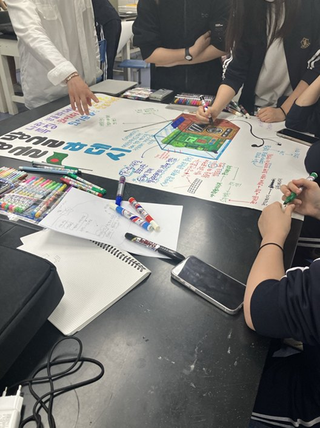
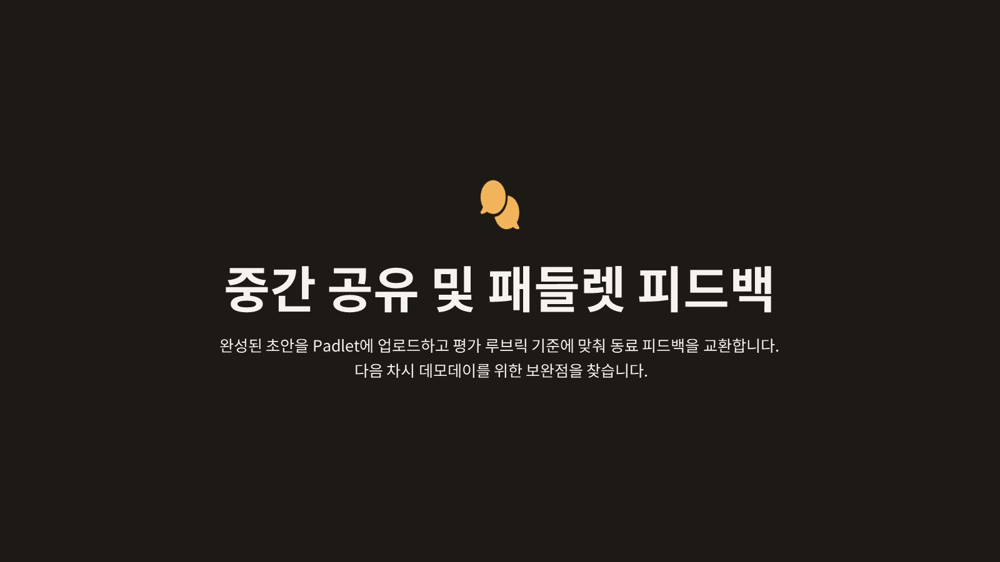
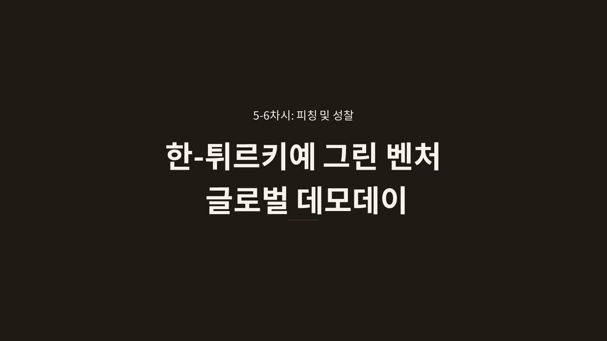

피드백을 하나 이상
반영해 완성하기
오늘의 목표받은 피드백을 반영해 산출물을 완성하고, 루브릭 기준으로 서로 피드백해 데모데이 보완점을 찾아요.

수업 흐름
← → 키나 아래 버튼으로 넘겨요. 교사 모드를 켜면 발문·유의점이 보여요.

평가 루브릭 기준으로
피드백을 주고받아요
A 동화책
해결 원리가 과학적으로 맞게 위기→절정에 드러나나? 다국어 대사인가?
B 칼럼·포스터
기사 2편 비교, 주장–근거(데이터)–반론이 이어지나? 실천 수칙 3개?
C 홍보 영상
6장면 모두 화면·내레이션·자막이 있나? S#2 데이터에 출처?
D 사업계획서
KPI·SVI에 예상 수치와 계산식·출처가 있나?
다음 차시 데모데이를 위한
보완점을 찾아요
5차시에는 팀당 3분 피칭 + 2분 Q&A로 발표해요. 받은 피드백 가운데 데모데이 전까지 고칠 점을 정해요.

활동지
피드백 반영 기록
쓴 내용은 이 기기의 브라우저에만 저장돼요. 수업이 끝나면 아래 「내 기록 모두 복사」로 모둠 문서에 붙여 두세요.
1받은 피드백과 반영
2중간 공유
3데모데이 준비
이 차시 슬라이드
트랙 A 활동지 · 18~20장
트랙 B · C · D 활동지 · 중간 공유 · 22~30장
이 차시 평가
트랙별 산출물 평가 기준
트랙별 대응 성취기준 — A 동화책·C 영상: [12기지04-01] [10통과2-02-06] · B 칼럼: [10공국2-03-02] · D 사업계획서: [10공국2-03-02] [12기가05-04] · 관찰 평가 및 산출물(스토리보드, 포스터, 콘티, 사업계획서) 평가
| 기준 | A | B | C |
|---|---|---|---|
| [A] 동화책 기획·스토리보드 12기지04-01 · 10통과2-02-06 | 에너지 불평등 문제와 해결 원리가 과학적으로 맞게 이야기 전개(위기→절정)에 드러나고, 대상 독자 수준에 맞는 다국어 대사로 전한다. (조건: 5단계·15장면) | 이야기는 완성했지만 해결 원리가 과학적으로 틀리거나 설명 없이 ‘마법처럼’ 해결된다. 또는 대사가 한 언어뿐이다. | 5단계 가운데 위기·절정이 비어 있거나, 에너지 문제가 이야기에 드러나지 않는다. |
| [B] 칼럼 집필·포스터 제작 10공국2-03-02 | 양국 기사를 2편 이상 비교해 프레이밍 차이를 짚고, 주장–근거(데이터)–반론 고려가 이어진 칼럼을 쓴다. 포스터에는 슬로건과 실천 수칙 3개가 들어간다. | 기사 1편만 분석했거나, 칼럼의 주장과 근거 데이터가 연결되지 않는다. | 기사 분석 없이 의견만 쓰거나, 포스터에 실천 수칙이 없다. |
| [C] 영상 기획·콘티 제작 12기지04-01 · 10통과2-02-06 | 타깃 시청자와 핵심 메시지를 한 문장으로 정하고, 6장면 모두에 화면·내레이션·자막을 채우며, 데이터 장면(S#2)에 출처를 적는다. | 6장면 중 1~2장면이 비어 있거나, 데이터 장면에 출처가 없다. | 타깃 시청자나 핵심 메시지가 정해지지 않았고, 3장면 이상이 비어 있다. |
| [D] 사업계획서·피드백 반영 10공국2-03-02 · 12기가05-04 | 캔버스 9요소와 ‘과학·공학 원리’ 칸을 채우고, 가치 제안(KPI·SVI)에 예상 수치와 계산식·출처를 적으며, 받은 Padlet 피드백 2개 이상을 반영한 흔적을 남긴다. | 가치 제안(KPI·SVI)을 수치 없이 적었거나, 받은 피드백을 1개 이하만 반영했다. | 고통점과 솔루션이 서로 연결되지 않거나, 9요소 중 4개 이상이 비어 있다. |
A·B·C는 이 과제의 채점 수준이에요. 학기 성취도(A~E)는 학교 성취평가 기준에 따라 따로 산출해요.
나가기 질문
우리 산출물이 평가 기준 A 수준이 되려면 무엇이 더 필요할까요?